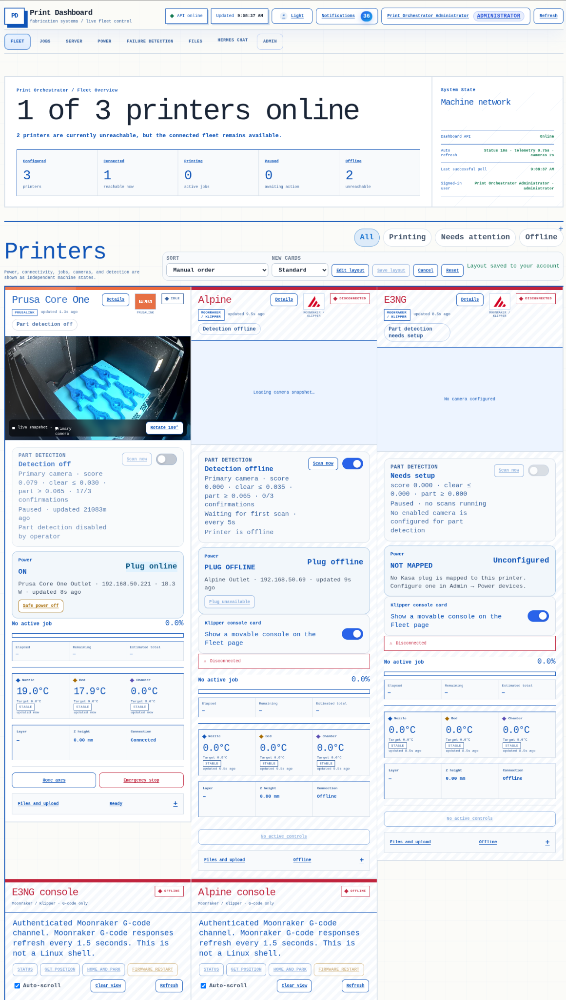

Printer fleet management
Print Orchestrator
A shared operating surface for a mixed printer fleet. I built it to make printer state easier to understand, reduce interface hopping, and keep recovery tools close to the evidence that explains the problem.
Working systemPrusaLink + MoonrakerLocal networkActive development

Real dashboard capture supplied from the working Print Orchestrator interface.PO-01
Overview
Why I built one dashboard for a mixed printer fleet.
The problem, my contribution, and the constraint that shaped the work.
Context
The problem I was solving
My printers did not share one control system. One used PrusaLink while the others used Moonraker and Klipper. That meant separate browser tabs, different status terms, and no quick way to see whether a problem came from the printer, camera, power plug, job, or detection service.
System
What I built
I built a fleet dashboard that keeps each machine honest about its own capabilities while still giving the operator one place to work. The cards show connectivity, camera state, part detection, power mapping, temperatures, active jobs, files, and printer-specific controls.
Ownership
My role
I own the architecture, interface design, service integration, release packaging, testing, and ongoing recovery work. The project is built around my actual printer fleet, so every screen is shaped by real machine states rather than a generic dashboard template.
Constraint
The constraint that mattered
The biggest design constraint was not visual polish; it was avoiding false confidence. A printer can be online while its camera is stale, its power plug is unreachable, or part detection is not configured. Those states need to stay separate so an operator knows what is safe to do.
Design decisions
The interface had to respect how different each machine really is.
The tradeoffs and safeguards I used to move the project forward.
Keep device differences visible
I normalize the overall fleet view, but I do not pretend a PrusaLink printer and a Moonraker/Klipper printer expose the same controls. Cards render the features that are actually available.
Separate machine state from supporting services
Connectivity, job state, camera state, power, and detection are shown independently. This makes partial failures understandable and avoids turning every issue into a generic “offline” banner.
Write recovery states for an operator
The interface says what failed, what remains available, and what action is reasonable next. That is more useful than a raw exception or an unexplained red light.
Treat dangerous actions differently
Power-off, emergency-stop, firmware, and console actions use stronger visual language and are placed close to the machine context that justifies them.
Workflow
What happens between a printer update and an operator action.
A step-by-step view of the data and operator workflow.
Collect
Pull each machine’s native status, temperatures, camera, job, and power information.
Normalize
Map shared concepts without hiding printer-specific capabilities or unsupported features.
Present
Show the operator the machine, supporting services, and available actions together.
Recover
Record the failure, guide the next action, and verify that the machine returned to a safe state.
Evidence
Screenshots and build evidence from the working system.
These images connect the description to work that was built, tested, or operated.
What to look for
The evidence connects the description to something built, tested, or operated.
- Fleet overview with configured, connected, printing, paused, and offline counts
- Per-printer camera, temperature, job, power, part-detection, files, and console cards
- PrusaLink and Moonraker/Klipper integration in one visual system
- Notification, Hermes, server, power, and administration navigation
- Responsive card layout and operator-specific layout persistence
Results
A clearer way to operate, troubleshoot, and extend the fleet.
The result, the main lesson, and the next useful improvement.
Operational clarity
The fleet can be understood from one screen without erasing the differences between machines.
Faster fault isolation
An operator can see whether the issue is the printer, camera, power plug, detection service, or job state before taking action.
A platform to extend
The same structure can support job routing, richer part detection, maintenance history, and tighter PFC/Hermes coordination.
What comes next
The next useful improvement is already clear.
The next work is focused on improving part-detection feedback, making recovery history easier to compare, and turning more repeated operator actions into safe, testable workflows.